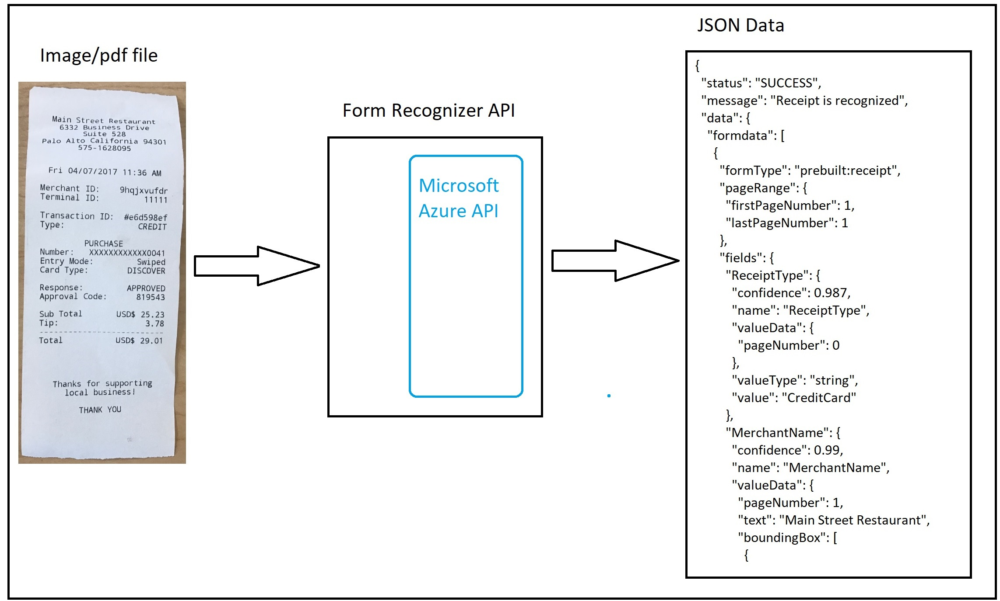
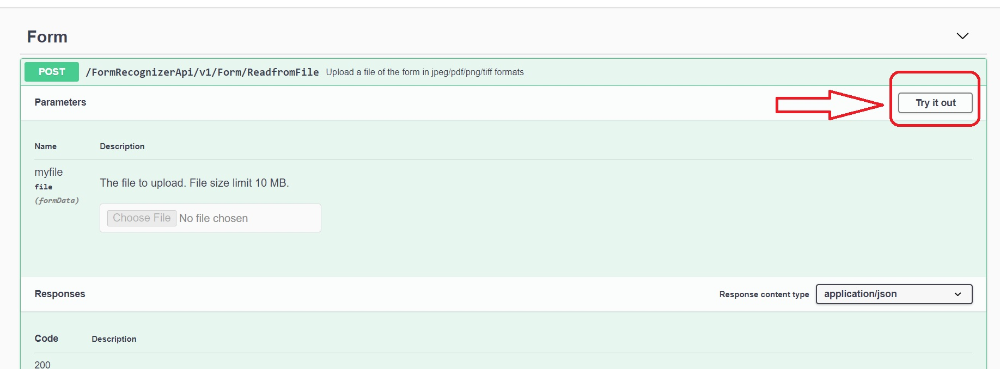
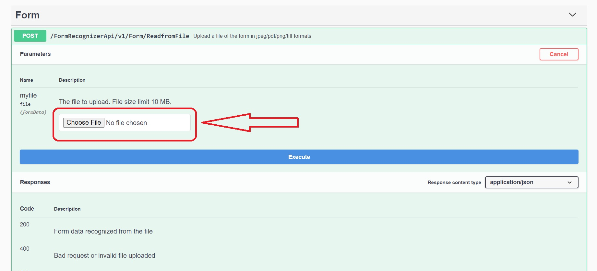
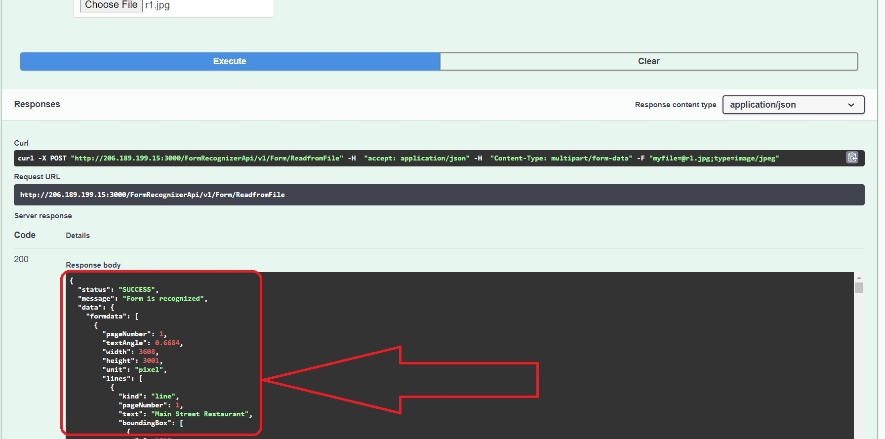
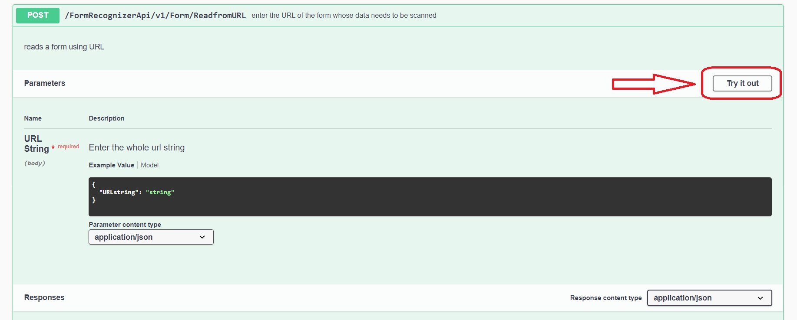
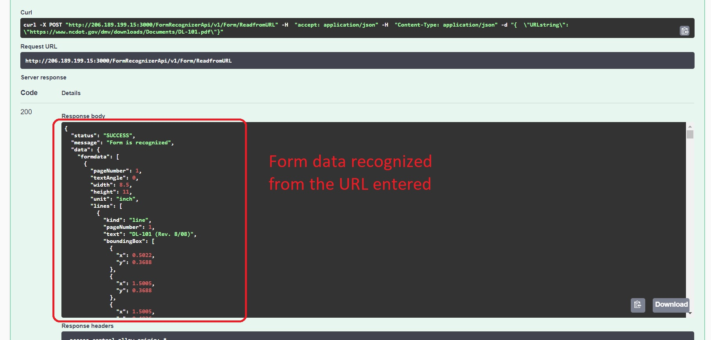
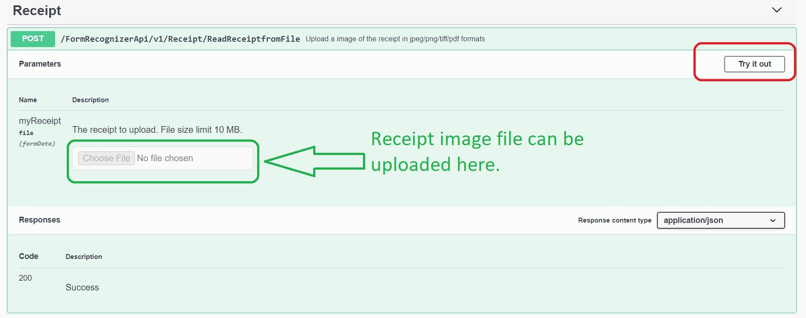
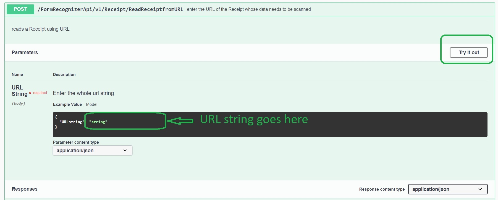

Form Recognizer API
Recognize the content of forms and receipt to obtain data in JSON format
About the API
This Form Recognizer API makes use of Microsoft Azure cognitive services and lets you scan your digital forms or receipts and returns the data in JSON format. This JSON data can be converted different structures according to your needs and requirements.
How does it work?
This API lets you upload your form or receipts in pdf/jpeg/tiff/png format and invokes the Microsoft Azure Form recoginizer API in the backend. It collects the scanned data and returns the same to the user.
Block diagram
Refer to the below image for process flow.
API methods
There are four API methods in total
- Forms
- ReadfromFile
- ReadfromURL
- Receipts
- ReadReceiptfromFile
- ReadReceiptfromURL
Testing using Swagger
These API methods can be tested using Swagger Playground
Form/ReadfromFile
This method allows you upload a single file of size less than 10 MB.
The file type must be of .pdf or .jpeg(jpg) or .tiff or .png.
Steps
After you expanded the "Form/ReadfromFile" API method, click on "Try it Out"
Under the paramters section, you should see an option to upload a file.
After you selected the file you would like to be recognized, click Execute.
Note: Form Recognition is
AI involved process. Please allow few minutes for the repsonse to appear.Be Patient.
Once the API is invoked successfully, you should see the form data in JSON format under the response section.
Form/ReadfromURL
This method works same way as ReadfromFile except instead of uploading the file, you can enter the a web url for the file you would like to be recognized.
The URL string needs to be a valid one. The URL string is sent as part of the request body against the field name "URLstring".
The file type must be of .pdf or .jpeg(jpg) or .tiff or .png.
Steps
After you expanded the "Form/ReadfromURL" API method, click on "Try it Out"
Under the paramters section, you should see the request body with a single field name "URLstring". DO not modify this field name.
Enter the address or complete url of the input file. Refer to the image below.
After you entered the URL you would like to be recognized, click Execute.
Note: Form Recognition is
AI involved process and the file needs to be fetched over internet. Please allow few minutes for the repsonse to appear. Be Patient.
Once the API is invoked successfully, you should see the form data in JSON format under the response section.
Receipt/ReadReceiptfromFile
This method works same way as Form/ReadfromFile. If your input file is a receipt , the response is more structured as per the data fields avaialbe in a receipt
The file type must be of .pdf or .jpeg(jpg) or .tiff or .png.
Steps
After you expanded the "Receipt/ReadReceiptfromFile" API method, click on "Try it Out"
Under the paramters section, you should see an option to upload a file.
After you selected the file you would like to be recognized, click Execute.
Note: Form Recognition is
AI involved process. Please allow few minutes for the repsonse to appear.Be Patient.
Once the API is invoked successfully, you should see the form data in JSON format under the response section.
Refer to images Form/ReadfromFile section for steps
Receipt/ReadReceiptfromURL
This method works same way as Form/ReadfromURL. If your input file is a receipt , the response is more structured as per the data fields avaialbe in a receipt
The URL string needs to be a valid one. The URL string is sent as part of the request body against the field name "URLstring".
The file type must be of .pdf or .jpeg(jpg) or .tiff or .png.
Steps
After you expanded the "Receipt/ReadReceiptfromURL" API method, click on "Try it Out"
Under the paramters section, you should see the request body with a single field name "URLstring". DO not modify this field name.
Enter the address or complete url of the input file.
After you entered the URL you would like to be recognized, click Execute.
Note: Form Recognition is
AI involved process and the file needs to be fetched over internet. Please allow few minutes for the repsonse to appear. Be Patient.
Once the API is invoked successfully, you should see the form data in JSON format under the response section.
Refer to images Form/ReadfromURL section for steps
Video: How to test using Swagger Playground
Watched the below video about testing the API using the Swagger